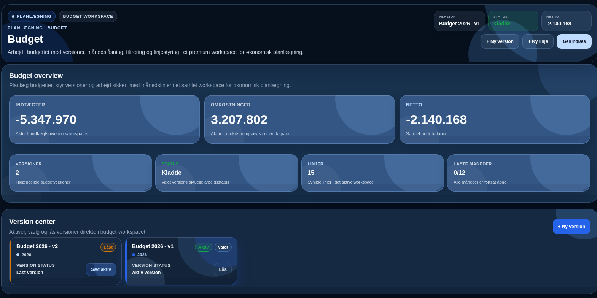
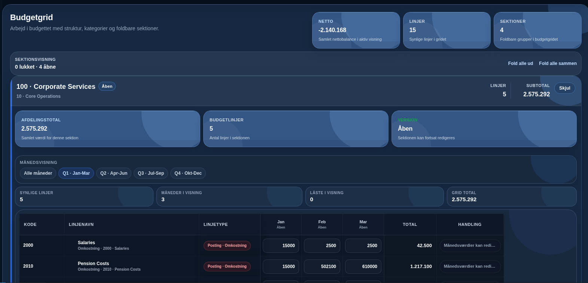
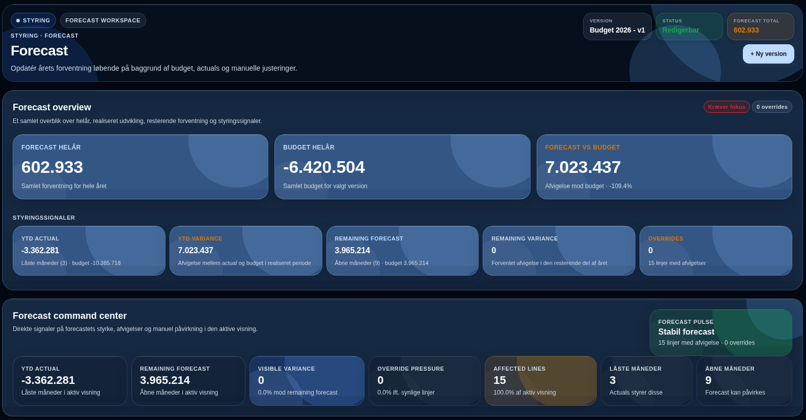
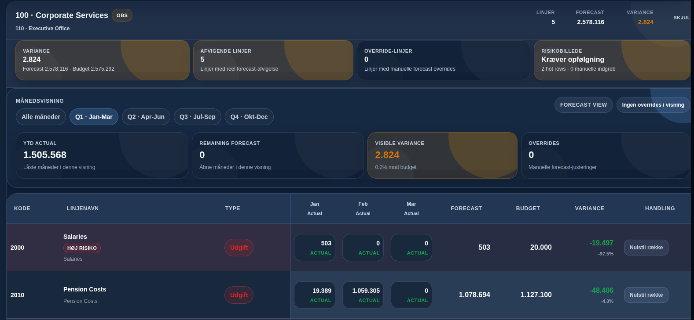
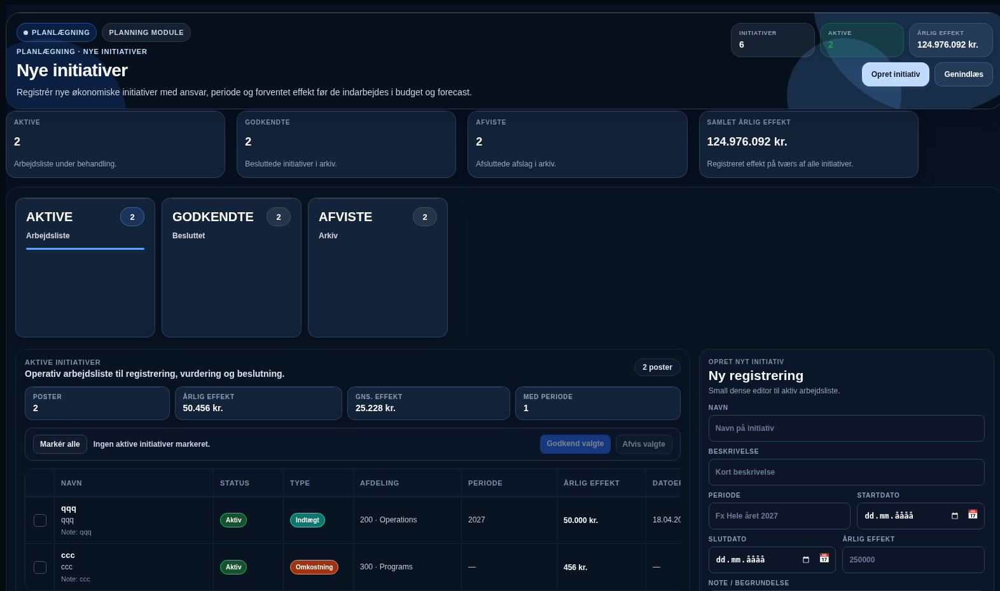
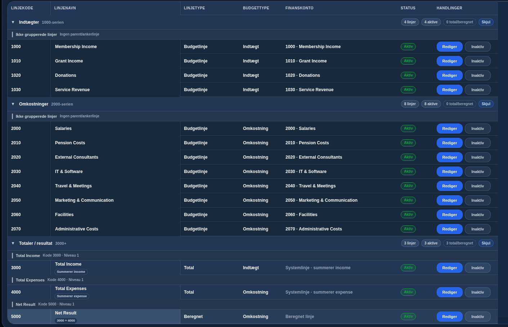
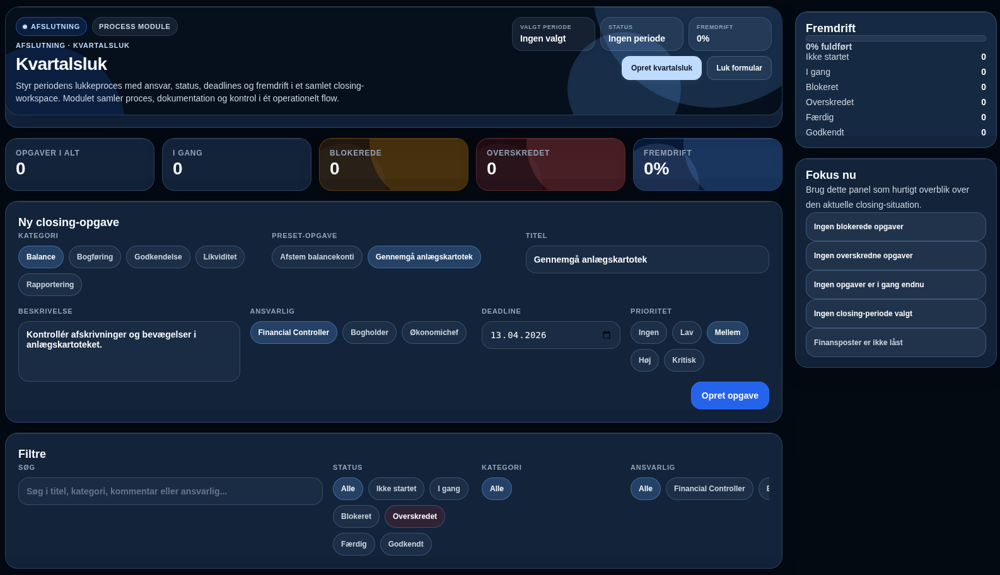
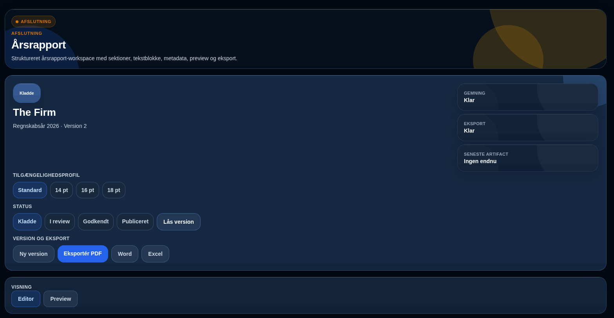
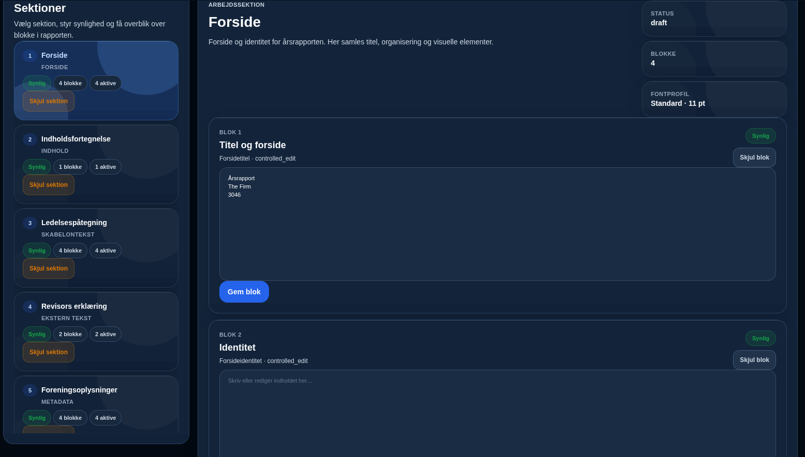

Ét sammenhængende sted for økonomiens vigtigste arbejdsgange
Når data og arbejdsgange hænger bedre sammen, bliver der mindre usikkerhed, mindre dobbeltarbejde og mere ro omkring tallene.
Det bliver lettere at følge, forstå og forklare økonomien, når budget, opfølgning og afslutning hænger sammen.
God økonomistyring skal ikke stjæle al energi. Den skal give plads til faglighed, relationer og de opgaver, som virkelig betyder noget.
“Jeg vil ikke bare bygge software. Jeg vil gøre hverdagen lettere for mennesker, der hver dag bærer et tungt ansvar i økonomien.”
— Astrid SchellBudget som fundament, ikke bare endnu en fil


Forecast som en rolig videreførelse af det, man allerede ved


Opfølgning der gør tallene lettere at stole på
Opfølgning er et af de steder, hvor man tydeligst mærker forskellen mellem tunge processer og god struktur. Når afvigelser, perioder og vurderinger samles i samme arbejdsrum, bliver det lettere at forstå tallene og handle på dem i tide.
Projektstyring som hænger sammen med økonomien

Jo bedre tingene hænger sammen undervejs, jo lettere bliver det at samle op senere. Når projekter og initiativer ses tæt på økonomien, bliver både prioritering og opfølgning mere tryg.
Bevillinger fortjener mere end sideark og løse noter

| Behov | Eksempel | Mulig værdi |
|---|---|---|
| Bevillingsoverblik | Beløb, periode, status og ansvar | Mere styr på helheden |
| Kobling til økonomien | Budget, projekter og opfølgning | Mindre tungt ekstraarbejde |
| Krav og deadlines | Afrapportering, dokumentation og frister | Mere overskuelig hverdag |
Kvartalsluk bør være krævende, men ikke kaotisk

Mere synlig proces. Mere tydeligt ansvar. Og en afslutning der i højere grad føles som en styret bevægelse fremad i stedet for et akut oprydningsarbejde.
Årsregnskab som en naturlig forlængelse af det daglige arbejde
Når budget, opfølgning og afslutning hænger sammen, bliver årsregnskabet lettere at samle med ro og præcision.
En stor del af tyngden ved årsregnskab opstår, når man skal bygge bro mellem mange verdener. Det kan gøres enklere.
God kvalitet i årsregnskabet kommer ikke kun af kontrol. Den kommer også af god sammenhæng før afslutningen.
Årsrapport med bedre fortælling og stærkere sammenhæng


Løsningen er udviklet med udgangspunkt i praktisk erfaring med de kompleksiteter, der præger moderne økonomistyring
Teknologi skal ikke føre os mod en dommedag, hvor mennesker bliver overflødige. Den skal gøre det modsatte. Min platform gør økonomien enkel og transparent, så organisationer kan bruge mindre tid på kompleksitet – og mere tid på det menneskelige: faglighed, relationer og følelser, som ingen maskine nogensinde kan erstatte.
Det her er ikke kun tænkt i teori. Det kommer fra virkelige arbejdsgange, virkelige frustrationer og et reelt ønske om at gøre noget bedre.
God software må gerne være smuk og stærk. Men det vigtigste er, at den gør hverdagen lettere at være i for de mennesker, der bruger den.
Hvis du vil høre mere, viser jeg dig gerne platformen
Du taler direkte med den person, der både forstår økonomiarbejdet og selv bygger løsningen.
Navn: Astrid Schell
Email: SchellLogic@proton.me